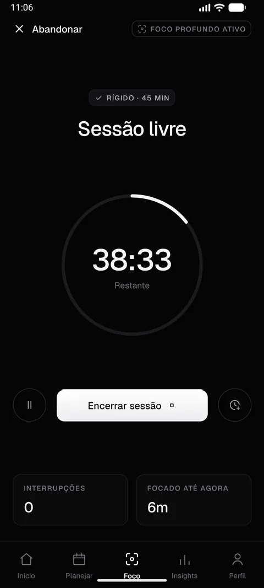
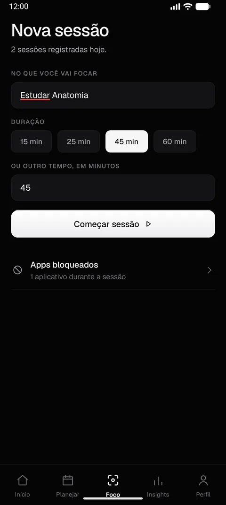
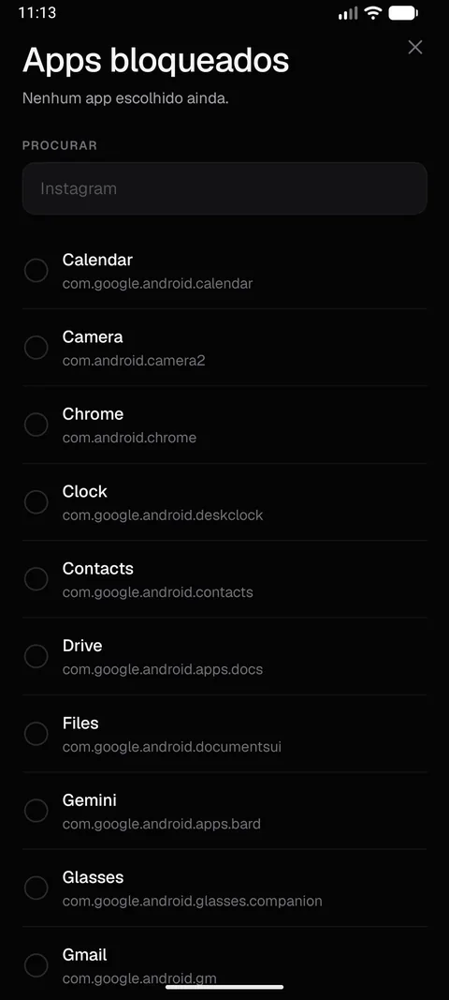
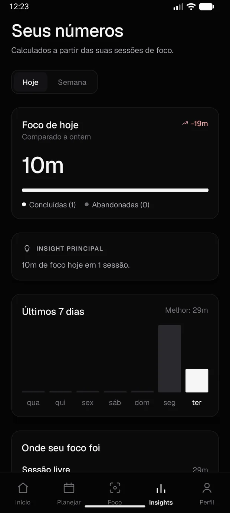

Um app de foco que não aceita um não.
A maioria dos apps de foco pede força de vontade e avisa quando ela falha. O StayOn fecha o Instagram sozinho e só devolve ele quando a sessão termina.
android 7+ · 72 mb · sem conta · sem servidor

Onde entra
Três coisas que não terminam com o celular do lado.
Uma sessão de 45 minutos
O que acontece, minuto a minuto.
Montar
Você escreve no que vai focar.
Um nome e um tempo. Estudar anatomia, 45 minutos. O nome não é enfeite: é com ele que o app separa depois onde o seu tempo foi.

Escolher
Você marca o que fica de fora.
A lista é a do seu aparelho, lida na hora. Marque o Instagram, o TikTok, o joguinho — o que te pega. A escolha fica salva para a próxima.

Barrar
Você abre o Instagram sem pensar.
E ele não abre.
Quatro segundos depois do play a mão já foi sozinha. O Android avisa o StayOn que a janela mudou, ele confere a sua lista e te devolve para a tela inicial no mesmo segundo. Sem diálogo, sem "tem certeza?", sem espaço para negociar.
Tente abrir um deles
Somar
A sessão acaba e vira número.
Tudo volta sozinho, sem você fazer nada. E o que fica é o que você focou de verdade — medido, não estimado. Quanto tempo, em quantas sessões, em quê, e como isso se compara a ontem.

Sem letra miúda
Sem taxa, sem conta, sem servidor.
O que ele não faz
Forçar parada derruba o bloqueio. Não tem jeito.
Se você entrar em Configurações → Aplicativos → StayOn → Forçar parada, o Android desliga o serviço de acessibilidade e o bloqueio acaba até você reativar na mão. Isso vale para qualquer app de bloqueio do sistema e não é contornável: quem desliga é o Android, não o StayOn. Fechar pelo gerenciador de tarefas, por outro lado, não muda nada — o bloqueio continua e a sessão volta no mesmo ponto.
Instalar
Ainda não está na Play Store.
Publicar lá custa uma taxa anual, ainda não paga. Até então a instalação é manual, em três passos.
- 01Baixe o APK e abra o arquivo no celular. O Android vai pedir para permitir instalação de fonte desconhecida.
- 02No app, escolha o que barrar em Foco → Apps bloqueados.
- 03Ative a permissão uma única vez em Configurações → Acessibilidade → StayOn. Sem ela o app funciona, mas não bloqueia nada.